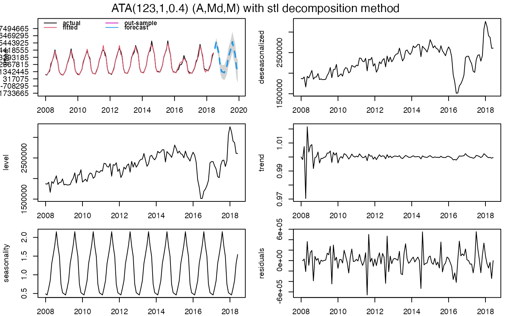

R/ATA.R
ATA.RdATA is a generic function for Ata Method forecasting.
The Ata method based on the modified simple exponential smoothing as described in Yapar, G. (2016) <doi:10.15672/HJMS.201614320580> ,
Yapar G., Capar, S., Selamlar, H. T., Yavuz, I. (2017) <doi:10.15672/HJMS.2017.493> and Yapar G., Selamlar, H. T., Capar, S., Yavuz, I. (2019)
<doi:10.15672/hujms.461032> is a new univariate time series forecasting method which provides innovative solutions to issues faced during
the initialization and optimization stages of existing methods.
Forecasting performance of the Ata method is superior to existing methods both in terms of easy implementation and accurate forecasting.
It can be applied to non-seasonal or seasonal time series which can be decomposed into four components (remainder, level, trend and seasonal).
This methodology performed well on the M3 and M4-competition data.
ATA(
X,
Y = NULL,
parP = NULL,
parQ = NULL,
parPHI = NULL,
model.type = NULL,
seasonal.test = NULL,
seasonal.model = "decomp",
seasonal.period = NULL,
seasonal.type = NULL,
seasonal.test.attr = NULL,
find.period = NULL,
accuracy.type = NULL,
nmse = 3,
level.fixed = FALSE,
trend.opt = "none",
h = NULL,
train_test_split = NULL,
holdout = FALSE,
holdout.adjustedP = TRUE,
holdout.set_size = NULL,
holdout.onestep = FALSE,
holdin = FALSE,
transform.order = "before",
transform.method = NULL,
transform.attr = NULL,
lambda = NULL,
shift = 0,
initial.level = "none",
initial.trend = "none",
ci.level = 95,
start.phi = NULL,
end.phi = NULL,
size.phi = NULL,
negative.forecast = TRUE,
onestep = FALSE,
print.out = TRUE,
plot.out = TRUE
)A numeric vector or time series of class ts or msts for in-sample.
A numeric vector or time series of class ts or msts for out-sample. If you do not have out-sample data, you can split in-sample data into training and test dataset with train_test_split argument.
Value of Level parameter p. If NULL or "opt", it is estimated. p has all integer values from 1 to length(X).
Value of Trend parameter q. If NULL or "opt", it is estimated. q has all integer values from 0 to p.
Value of Damping Trend parameter phi. If NULL or "opt", it is estimated. phi has all values from 0 to 1.
An one-character string identifying method using the framework terminology. The letter "A" for additive model, the letter "M" for multiplicative model.
If NULL, both letters will be tried and the best model (according to the accuracy measure accuracy.type) returned.
Testing for stationary and seasonality. If TRUE, the method firstly uses test="adf", Augmented Dickey-Fuller, unit-root test then the test returns the least number of differences required to pass the test at level alpha.
After the unit-root test, seasonal test applies on the stationary X.
A string identifying method for seasonal decomposition. If NULL, "decomp" method is default. c("none", "decomp", "stl", "stlplus", "tbats", "stR") phrases of methods denote
none : seasonal decomposition is not required.
decomp : classical seasonal decomposition. If decomp, the stats package will be used.
stl : seasonal-trend decomposition procedure based on loess developed by Cleveland et al. (1990). If stl, the stats and forecast packages will be used. Multiple seasonal periods are allowed.
stlplus : seasonal-trend decomposition procedure based on loess developed by Cleveland et al. (1990). If stlplus, the stlplus package will be used.
tbats : exponential smoothing state space model with Box-Cox transformation, ARMA errors, trend and seasonal components.
as described in De Livera, Hyndman & Snyder (2011). Parallel processing is used by default to speed up the computations. If tbats, the forecast package will be used. Multiple seasonal periods are allowed.
stR : seasonal-trend decomposition procedure based on regression developed by Dokumentov and Hyndman (2015). If stR, the stR package will be used. Multiple seasonal periods are allowed.
x13 : seasonal-trend decomposition procedure based on X13ARIMA/SEATS. If x13, the seasonal package will be used.
x11 : seasonal-trend decomposition procedure based on X11. If x11, the seasonal package will be used.
Value(s) of seasonal periodicity. If NULL, frequency of X is default If seasonal.period is not integer, X must be msts time series object. c(s1,s2,s3,...) for multiple period. If X has multiple periodicity, "tbats" or "stR" seasonal model have to be selected.
An one-character string identifying method for the seasonal component framework. The letter "A" for additive model, the letter "M" for multiplicative model.
If NULL, both letters will be tried and the best model (according to the accuracy measure accuracy.type) returned.
If seasonal decomposition methods except decomp with "M", Box-Cox transformation with lambda=0 is selected.
Attributes set for unit root, seasonality tests, X13ARIMA/SEATS and X11. If NULL, corrgram.tcrit=1.28, uroot.test="adf", suroot.test="correlogram", suroot.uroot=TRUE, uroot.type="trend", uroot.alpha=0.05, suroot.alpha=0.05, uroot.maxd=2, suroot.maxD=1, suroot.m=frequency(X), uroot.pkg="urca", multi.period="min", x13.estimate.maxiter=1500, x13.estimate.tol=1.0e-5, x11.estimate.maxiter=1500, x11.estimate.tol=1.0e-5. If you want to change, please use ATA.SeasAttr function and its output.
For example, you can use seasonal.test.attr = ATA.SeasAttr(corrgram.tcrit=1.65) equation in ATA function.
Find seasonal period(s) automatically. If NULL, 0 is default. When find.period,
0 : none
1 : single period with find.freq
2 : single period with forecast::findfrequency
3 : multiple period with find.freq & stR
4 : multiple period with find.freq & tbats
5 : multiple period with find.freq & stl
Accuracy measure for optimization of the best ATA Method forecasting. IF NULL, sMAPE is default.
lik : maximum likelihood functions
sigma : residual variance.
MAE : mean absolute error.
MSE : mean square error.
AMSE : Average MSE over first `nmse` forecast horizons using k-step forecast.
GAMSE : Average MSE over first `nmse` forecast horizons using one-step forecast.
RMSE : root mean squared error.
MPE : mean percentage error.
MAPE : mean absolute percentage error.
sMAPE : symmetric mean absolute percentage error.
MASE : mean absolute scaled error.
OWA : overall weighted average of MASE and sMAPE.
MdAE : median absolute error.
MdSE : median square error.
RMdSE : root median squared error.
MdPE : median percentage error.
MdAPE : median absolute percentage error.
sMdAPE : symmetric median absolute percentage error.
If accuracy.type == "AMSE" or "GAMSE", nmse provides the number of steps for average multistep MSE (`2<=nmse<=30`).
If TRUE, "pStarQ" --> First, fits ATA(p,0) where p = p* is optimized for q=0. Then, fits ATA(p*,q) where q is optimized for p = p*.
When trend.opt,
none : none
fixed : "pBullet" --> Fits ATA(p,1) where p = p* is optimized for q = 1.
search : "qBullet" --> Fits ATA(p,q) where p = p* is optimized for q = q* (q > 0). Then, fits ATA(p*,q) where q is optimized for p = p*.
The forecast horizon.
When the parameter is NULL; if the frequency of X is 4, the parameter is set to 8; if the frequency of X is 12, the parameter is set to 18; the parameter is set to 6 for other cases.
If Y is NULL, this parameter divides X into two parts: training set (in-sample) and test set (out-sample). train_test_split is number of periods for forecasting and size of test set.
If the value is between 0 and 1, percentage of length is active.
Default is FALSE. If TRUE, ATA Method uses the holdout forecasting for accuracy measure to select the best model. In holdout forecasting, the last few data points are removed from the data series. The remaining historical data series is called in-sample data (training set), and the holdout data is called validation set (holdout set). If TRUE, holdout.set_size will used for holdout data.
Default is TRUE. If TRUE, parP will be adjusted by length of training - validation sets and in-sample set when the holdout forecasting is active.
If holdout is TRUE, this parameter will be same as h for defining holdout set.
Default is FALSE. if TRUE, the dynamic forecast strategy uses a one-step model multiple times (h forecast horizon) where the holdout prediction for the prior time step is used as an input for making a prediction on the following time step.
Default is FALSE. If TRUE, ATA Method uses the hold-in forecasting for accuracy measure to select the best model. In hold-in forecasting, the last h-length data points are used for accuracy measure.
If "before", Box-Cox transformation family will be applied and then seasonal decomposition techniques will be applied. If "after", seasonal decomposition techniques will be applied and then Box-Cox transformation family will be applied.
Transformation method --> "Box_Cox", "Sqrt", "Reciprocal", "Log", "NegLog", "Modulus", "BickelDoksum", "Manly", "Dual", "YeoJohnson", "GPower", "GLog". If the transformation process needs shift parameter,
ATA.Transform will calculate required shift parameter automatically.
Attributes set for Box-Cox transformation. If NULL, bcMethod = "loglik", bcLower = 0, bcUpper = 1, bcBiasAdj = FALSE. If you want to change, please use ATA.BoxCoxAttr function and its output.
Box-Cox power transformation family parameter. Default is NULL. When "transform.method" is selected and lambda is set as NULL, required "lambda" parameter will be calculated automatically based on "transform.attr".
Box-Cox power transformation family shifting parameter. Default is 0. When "transform.method" is selected, required shifting parameter will be calculated automatically according to dataset.
"none" is default,
none : ATA Method calculates the pth observation in X for level.
mean : ATA Method calculates average of first p value in Xfor level.
median: ATA Method calculates median of first p value in Xfor level.
"none" is default,
none : ATA Method calculates the qth observation in X for trend.
mean : ATA Method calculates average of first q value in X(T)-X(T-1) for trend.
median: ATA Method calculates median of first q value in X(T)-X(T-1) for trend.
Confidence Interval levels for forecasting.
Lower boundary for searching parPHI.If NULL, 0 is default.
Upper boundary for searching parPHI. If NULL, 1 is is default.
Increment step for searching parPHI. If NULL, the step size will be determined as the value that allows the bounds for the optimised value of parPHI to be divided into 20 equal parts.
Negative values are allowed for forecasting. Default value is TRUE. If FALSE, all negative values for forecasting are set to 0.
Default is FALSE. if TRUE, the dynamic forecast strategy uses a one-step model multiple times (h forecast horizon) where the prediction for the prior time step is used as an input for making a prediction on the following time step.
Default is TRUE. If FALSE, summary of ATA Method is not shown.
Default is TRUE. If FALSE, graphics of ATA Method are not shown.
Returns an object of class ata. The generic accessor functions ATA.Forecast and ATA.Accuracy extract useful features of the value returned by ATA and associated functions.
ata object is a list containing at least the following elements
actual : The original time series.
fitted : Fitted values (one-step forecasts). The mean is of the fitted values is calculated over the ensemble.
level : Estimated level values.
trend : Estimated trend values.
residuals : Original values minus fitted values.
coefp : The weights attached to level observations.
coefq : The weights attached to trend observations.
p : Optimum level parameter.
q : Optimum trend parameter.
phi : Optimum damped trend parameter.
model.type: Form of trend.
h : The number of steps to forecast ahead.
forecast : Point forecasts as a time series.
out.sample: Test set as a time series.
method : The name of the optimum forecasting method as a character string for ATA(P,Q,PHI)(Error,Trend,Season).
initial.level : Selected initial level values for the time series forecasting method.
initial.trend : Selected initial trend values for the time series forecasting method.
level.fixed : A choice of optional level-fixed trended methods.
trend.opt : A choice of optional trend and level optimized trended methods (none, trend.fixed or trend.search).
transform.method : Box-Cox power transformation family method --> Box_Cox, Sqrt, Reciprocal, Log, NegLog, Modulus, BickelDoksum, Manly, Dual, YeoJohnson, GPower, GLog.
transform.order : Define how to apply Box-Cox power transformation techniques, before or after seasonal decomposition.
lambda : Box-Cox power transformation family parameter.
shift : Box-Cox power transformation family shifting parameter.
accuracy.type : Accuracy measure that is chosen for model selection.
nmse : The number of steps for average multistep MSE.
accuracy : In and out sample accuracy measures and its descriptives that are calculated for optimum model are given.
par.specs : Parameter sets for Information Criteria.
holdout : Holdout forecasting is TRUE or FALSE.
holdout.training : Training set in holdout forecasting.
holdout.validation: Validation set in holdout forecasting.
holdout.forecast : Holdout forecast.
holdout.accuracy : Accuracy measure chosen for model selection in holdout forecasting.
holdin : Hold-in forecasting is TRUE or FALSE.
is.season : Indicates whether it contains seasonal pattern.
seasonal.model : The name of the selected decomposition method.
seasonal.type : Form of seasonality.
seasonal.period : The number of seasonality periods.
seasonal.index : Weights of seasonality.
seasonal : Estimated seasonal values.
seasonal.adjusted : Deseasonalized time series values.
execution.time : The real and CPU time 'in seconds' spent by the system executing that task, including the time spent executing run-time or system services on its behalf.
calculation.time : How much real time 'in seconds' the currently running R process has already taken.
Returns ATA(p,q,phi)(E,T,S) applied to X.
#'Yapar G, Yavuz I, Selamlar HT (2017). “Why and How Does Exponential Smoothing Fail? An In Depth Comparison of ATA-Simple and Simple Exponential Smoothing.” Turkish Journal of Forecasting, 1(1), 30--39.
#'Yapar G, Capar S, Selamlar HT, Yavuz I (2018). “Modified Holt's Linear Trend Method.” Hacettepe University Journal of Mathematics and Statistics, 47(5), 1394--1403.
#'Yapar G (2018). “Modified simple exponential smoothing.” Hacettepe University Journal of Mathematics and Statistics, 47(3), 741--754.
#'Yapar G, Selamlar HT, Capar S, Yavuz I (2019). “ATA method.” Hacettepe Journal of Mathematics and Statistics, 48(6), 1838-1844.
trainATA <- head(touristTR, 84)
testATA <- window(touristTR, start = 2015, end = 2016.917)
ata_fit <- ATA(trainATA, h=24, parQ = 1, seasonal.test = TRUE, seasonal.model = "stl")

#> ATA(9,1,1) (A,M,M)
#>
#> model.type: M
#>
#> seasonal.model: stl
#>
#> seasonal.type: M
#>
#> forecast horizon: 24
#>
#> accuracy.type: sMAPE
#>
#> Model Fitting Measures:
#>
#> sigma2 loglik MAE
#> 38329818197.22584534 -1205.95857480 113608.75598307
#> MSE RMSE MPE
#> 35558987966.10109711 188570.90964966 -0.29190478
#> MAPE sMAPE MASE
#> 4.32739502 4.29898466 0.24862795
#> OWA
#> 0.00000497
#>
#> In-Sample Accuracy Measures:
#>
#> MdAE MdSE RMdSE MdPE
#> 64273.477202 4131079871.624473 64273.477202 0.526554
#> MdAPE sMdAPE
#> 2.702918 2.736661
#>
#> Out-Sample Accuracy Measures:
#>
#> MAE MSE RMSE MPE MAPE sMAPE MASE OWA
#> NA NA NA NA NA NA NA NA
#>
#> Out-Sample Accuracy Measures:
#>
#> MdAE MdSE RMdSE MdPE MdAPE sMdAPE
#> NA NA NA NA NA NA
#>
#> Information Criteria:
#>
#> AIC AICc BIC
#> 2425.917 2427.391 2442.933
#>
#>
#> user system elapsed
#> 0.037 0.003 0.040
#>
#> calculation.time: 0.0399
#>
#>
#> Forecasts:
#> Time Series:
#> Start = 2015.00694444444
#> End = 2016.92361111111
#> Frequency = 12
#> [1] 1290137 1231085 1735277 2297139 3609797 4277848 5137010 5594614 4891925
#> [10] 4188325 2155062 1418780 1363532 1301120 1833994 2427820 3815154 4521210
#> [19] 5429249 5912884 5170221 4426594 2277661 1499492
#>
#>
ata_fc <- ATA.Forecast(ata_fit, out.sample = testATA)
#> Forecast horizon has been set to the length of out.sample data.
#> Error in ATA.Forecast(ata_fit, out.sample = testATA): object 'my_list' not found
ata_accry <- ATA.Accuracy(ata_fc)
#> Error in ATA.Accuracy(ata_fc): object 'ata_fc' not found